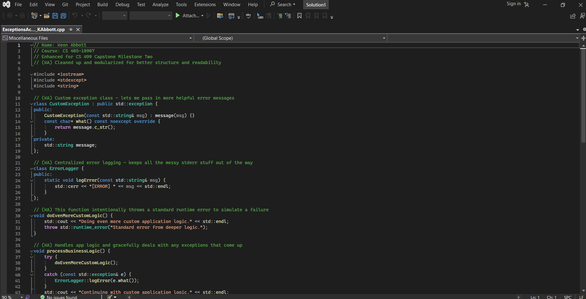

Artifact Overview
This artifact comes from a C++ project originally written for my CS 405 Secure Coding course. The goal was to demonstrate how to handle exceptions properly in a way that’s secure, readable, and clean. I chose this project because it reflects how I approach software design — I like things to be functional, well-structured, and easy to maintain.
For the capstone, I revisited the code and made improvements by refactoring the logic into reusable components and layering in custom exceptions and an error logger class. I also went back and added comments that explain exactly what each part is doing — not just for me, but for anyone who might review it later.
The goal wasn’t to overcomplicate things — it was to make sure the code speaks for itself. Whether you're skimming or digging into it line-by-line, I wanted it to feel accessible, direct, and aligned with real-world coding expectations.
Artifact Screenshot
Source Code
You can explore the enhanced version of this C++ project directly on GitHub. I refactored the logic, added comments throughout, and included a custom ErrorLogger class to make it more robust and readable.
View Software Design Project on GitHubThis artifact helped me demonstrate key software engineering principles: modular design, proper exception handling, and writing code that’s both secure and human-readable. If you’re curious about my approach or want to see how I think through structure and logic, this one’s a solid example.